Home / MLF / Week 9 / Real questions
MLF week 9 - real exam questions
23 questions pulled from past papers whose wording matches this week's topics, newest first, duplicates removed. Pick your answers, then press Check answers. Figures and answer keys are the originals.
Elapsed 00:00
Consider a constrained optimization problem in  with a single inequality constraint:
with a single inequality constraint:  At the point
At the point  which of the following is/are feasible directions at
which of the following is/are feasible directions at 
with a single inequality constraint: At the point which of the following is/are feasible directions at 


Consider a constrained optimization problem in  with a single inequality constraint as given below:
with a single inequality constraint as given below:  Which of the following is/are feasible directions at the point
Which of the following is/are feasible directions at the point
 ?
?
with a single inequality constraint as given below: Which of the following is/are feasible directions at the point
?


Using the method of Lagrange multipliers solve the following constrained optimization problem:
 Find the minimum value of the objective function. You can assume that the problem does have a global minimum. Your answer should be an integer.
Find the minimum value of the objective function. You can assume that the problem does have a global minimum. Your answer should be an integer.
Find the minimum value of the objective function. You can assume that the problem does have a global minimum. Your answer should be an integer.Which of the following options is/are correct 
- Set of all global minima of a convex function forms a convex set.
- Gradient descent algorithm is useful in constrained optimization problem.
- Union of two convex sets will result in a convex set always.
- A function cannot be a convex function if its domain is not a convex set.
Comprehension passage for this question
A logistics company transports goods using two types of vehicles: trucks (  ) and vans (
) and vans (  ). Each truck consumes 6 litres of fuel and requires 4 hours of driver time per trip. Each van consumes 3 litres of fuel and requires 5 hours of driver time per trip. The company must complete at least 120 litres worth of fuel usage and at least 200 driver hours per week. The cost per truck trip is Rs. 80 and per van trip is Rs. 50. Note: The company wants to fulfill these requirements at the lowest possible cost. Based on the above data, answer the given subquestions.
). Each truck consumes 6 litres of fuel and requires 4 hours of driver time per trip. Each van consumes 3 litres of fuel and requires 5 hours of driver time per trip. The company must complete at least 120 litres worth of fuel usage and at least 200 driver hours per week. The cost per truck trip is Rs. 80 and per van trip is Rs. 50. Note: The company wants to fulfill these requirements at the lowest possible cost. Based on the above data, answer the given subquestions.Which of the following correctly represents the objective function and constraints for the given problem


Comprehension passage for this question
A logistics company transports goods using two types of vehicles: trucks ( ) and vans ( ). Each truck consumes 6 litres of fuel and requires 4 hours of driver time per trip. Each van consumes 3 litres of fuel and requires 5 hours of driver time per trip. The company must complete at least 120 litres worth of fuel usage and at least 200 driver hours per week. The cost per truck trip is Rs. 80 and per van trip is Rs. 50. Note: The company wants to fulfill these requirements at the lowest possible cost. Based on the above data, answer the given subquestions.Which of the following is the correct Lagrangian function for the given problem


Comprehension passage for this question
A logistics company transports goods using two types of vehicles: trucks ( ) and vans ( ). Each truck consumes 6 litres of fuel and requires 4 hours of driver time per trip. Each van consumes 3 litres of fuel and requires 5 hours of driver time per trip. The company must complete at least 120 litres worth of fuel usage and at least 200 driver hours per week. The cost per truck trip is Rs. 80 and per van trip is Rs. 50. Note: The company wants to fulfill these requirements at the lowest possible cost. Based on the above data, answer the given subquestions.Which of the following correctly represents the complementary slackness conditions of the KKT conditions


Using the method of Lagrange multipliers, find a point on the circle centered at  with radius
with radius  that is closest to the point
that is closest to the point  . If this distance is
. If this distance is  , enter
, enter  as your answer. Your answer should be an integer.
as your answer. Your answer should be an integer.
with radius that is closest to the point . If this distance is , enter as your answer. Your answer should be an integer.Comprehension passage for this question
Consider the following constrained optimization problem:
 Answer the sub-questions assuming that we take a very small step in the direction of interest.
Answer the sub-questions assuming that we take a very small step in the direction of interest.At the point 
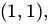
which of the following is/are feasible directions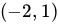

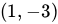
Consider the following constrained optimization problem:
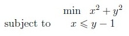
If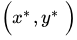
corresponds to the global minimum, find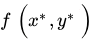
. Enter your answer correct to one decimal place.Comprehension passage for this question

Let A = (x, y) be a point in the set S which is closest to the origin. Choose the correct Primal optimization problem from the following.


Comprehension passage for this question
Which of the following options is/are true ?
- S is a convex set.
- The objective function of the Primal optimization problem from the previousquestion number no 9 is a convex function.
- The objective function of the Primal optimization problem from the previousquestion number no 9 is a concave function.
- None of these
Comprehension passage for this question
Based on the above data, answer the given subquestions.

Which of the following statements correctly represents the Karush-Kuhn-Tucker (KKT) conditions for the given optimization problem?


Comprehension passage for this question
Based on the above data, answer the given subquestions.
Which of the following statements are correct based on the KKT conditions and the solution to the optimization problem?


Comprehension passage for this question
Based on the above data, answer the given subquestions.
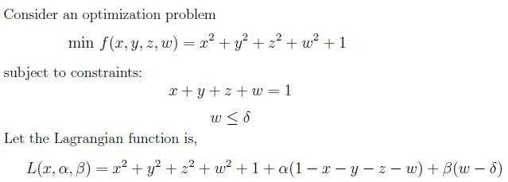
Which of the following statements correctly represent the Karush-Kuhn-Tucker (KKT) conditions for the given optimization problem?
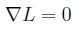
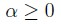
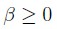
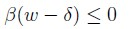
Comprehension passage for this question
A company produces two types of products P1 and P2. The cost price per unit of P1 and P2 are ₹2 and ₹3, respectively. The production process requires two types of resources: labor hours and machine hours. Each unit of p1 requires 2 labor hours and 1 machine hour, while each unit of P2 requires 1 labor hour and 3 machine hours. The company has constraints on the availability of labor and machine hours, which are 80 and 90 hours, respectively. Use the above information to answer the given sub-questions.Choose the correct Primal optimization problem from the following.


Comprehension passage for this question
A person went to the market to buy hens. Old hens can be bought for ₹ 200.00 each but young hens can be bought for ₹ 500.00 each. The old hens lay 3 eggs per week and the young hens lay 5 eggs per week. Each egg costs Rs. 11. A hen costs ₹ 50.00 per week to feed. If the financial constraint is ₹ 8000 per week to buy hens and the capacity constraint is that the total number of hens bought cannot exceed 20 per week. The objective is to earn more profit. Let x represent the number of old hens and y represent the number of young hens. Use the above information to answer the given subquestionsIf (x*, y*) is the optimal solution of the primal, u1 and u2 are Lagrange multipliers then which of the following options is/are true?


A consumer wants to maximize his utility subject to some constraints. He consumes two goods g1 and g2 and the utility function is the sum of g1 and g2. His budget is Rs.100. The per unit price of goods g1 and g2 are Rs.3 and Rs.4 respectively. Chose the correct optimization problem.


A consumer wants to maximize his utility subject to some constraints. He consumes two goods x
and y and the utility function is the product of x and y. His budget is Rs.200. The per unit price of goods x and y are Rs.3 and Rs.4 respectively. Choose the correct optimization problem.
- maximize x + y subject to 3x + 4y = 200
- maximize xy subject to 3x + 4y = 200
- maximize xy subject to 3x − 4y = 200
- maximize x + y subject to 3x − 4y = 200
Comprehension passage for this question
A company manufactures two types of products, A and B. Market research and available resources have indicated that the combined production level should not exceed 1200 products per week and demand for products of type B is at most half of that times production of products of type A. Further, the production level of products of type A can exceed three times the production of products of other type at most 600 units. If the company makes profits of $12 and $16 per products respectively on products A and B. If the number of products manufactured of type A and type B are x and y respectively, then formulate this problem so that the company can maximize the profit. Based on the above data answer the given subquestionsThe constraint function for the problem is


Comprehension passage for this question
A company manufactures two types of products, A and B. Market research and available resources have indicated that the combined production level should not exceed 1200 products per week and demand for products of type B is at most half of that times production of products of type A. Further, the production level of products of type A can exceed three times the production of products of other type at most 600 units. If the company makes profits of $12 and $16 per products respectively on products A and B. If the number of products manufactured of type A and type B are x and y respectively, then formulate this problem so that the company can maximize the profit. Based on the above data, answer the given subquestions.The constraint function for the problem is


Comprehension passage for this question
A manufacturing company makes two types of television sets; one is smart led and the other is normal led. The company has resources to make at most 300 sets a week. It takes Rs 1800 to make a smart led set and Rs 2700 to make a normal led set. The company can spend not more than Rs 648000 a week to make television sets. If it makes a profit of Rs 510 per smart led and Rs 675 per normal led. Based on the above data, answer the given subquestions.The objective function to maximise the profit for the given problem is
- 510x + 675y
- 410x + 675y
- 510x + 575y
- 102x + 135y
Comprehension passage for this question
A manufacturing company makes two types of television sets; one is smart led and the other is normal led. The company has resources to make at most 300 sets a week. It takes Rs 1800 to make a smart led set and Rs 2700 to make a normal led set. The company can spend not more than Rs 648000 a week to make television sets. If it makes a profit of Rs 510 per smart led and Rs 675 per normal led. Based on the above data, answer the given subquestions.The constraints for the given problem is
- x + y ≤ 300
- 2x + 3y ≤ 720
- x + 3y ≤ 120
- x ≥ 0, y ≥ 0